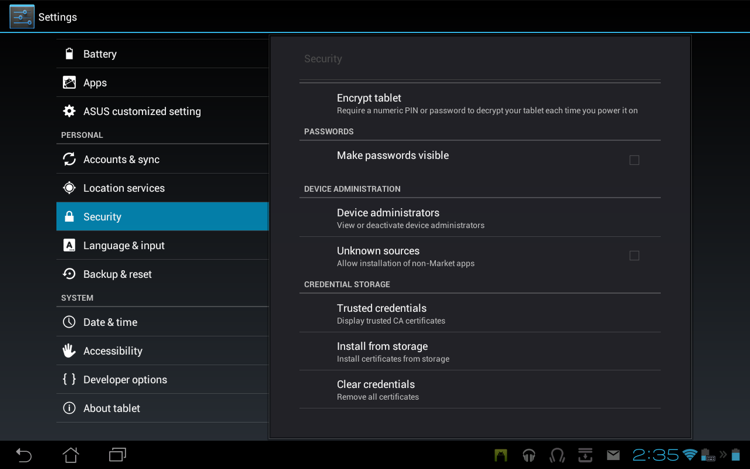
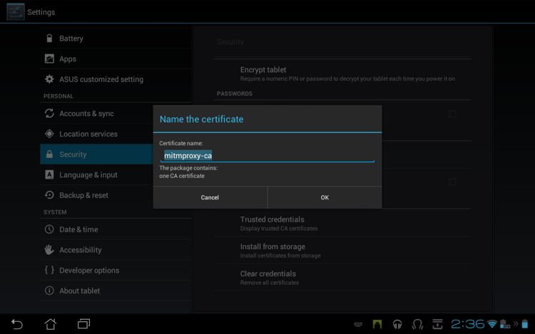
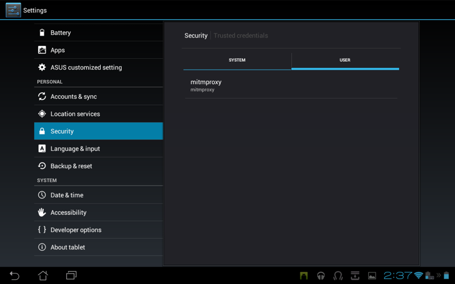

The proxy situation on Android is [an
embarrasment](http://code.google.com/p/android/issues/detail?id=1273).  It's
scarcely credible, but Android didn't have a global proxy setting at all until
quite recently, and it's still not supported on many common Android versions.
In the meantime the app ecosystem has grown used to life without this basic
necessity, and many apps merrily ignore it even if it's there. This situation
is improving, but in many circumstances using [transparent
mode](@!urlTo("transparent.html")!@) is mandatory for testing Android apps.

We used an Asus Transformer Prime TF201 with Android 4.0.3 in the examples
below - your device may differ, but the broad process should be similar. 


## Getting the certificate onto the device

First we need to get the __mitmproxy-ca-cert.cer__ file into the
__/sdcard/Downloads__ folder on the device. There are a number of ways to do
this. If you have the Android Developer Tools installed, you can use [__adb
push__](http://developer.android.com/tools/help/adb.html) to accomplish this.
Depending on your device, you could also transfer the file using external media
like an SD Card. In this example, we're using wget from within a terminal
emulator  to transfer the certificate from a local HTTP server: 


## Installing the certificate

Once we have the certificate on the local disk, we need to import it into the
list of trusted CAs. Go to Settings -&gt; Security -&gt; Credential Storage,
and select "Install from storage":



The certificate in /sdcard/Downloads is automatically located and offered for
installation. Installing the cert will delete the download file from the local
disk:



Afterwards, you should see the certificate listed in the Trusted Credentials
store:



